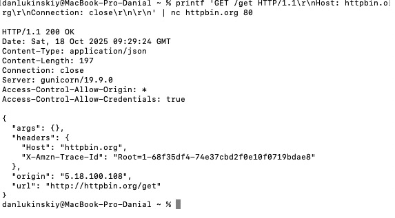
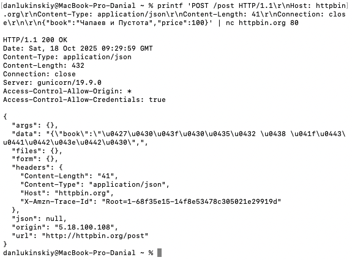
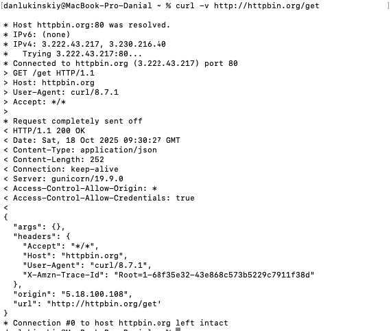
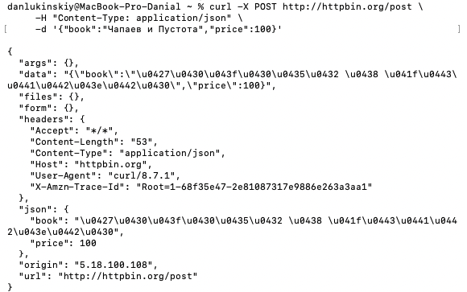
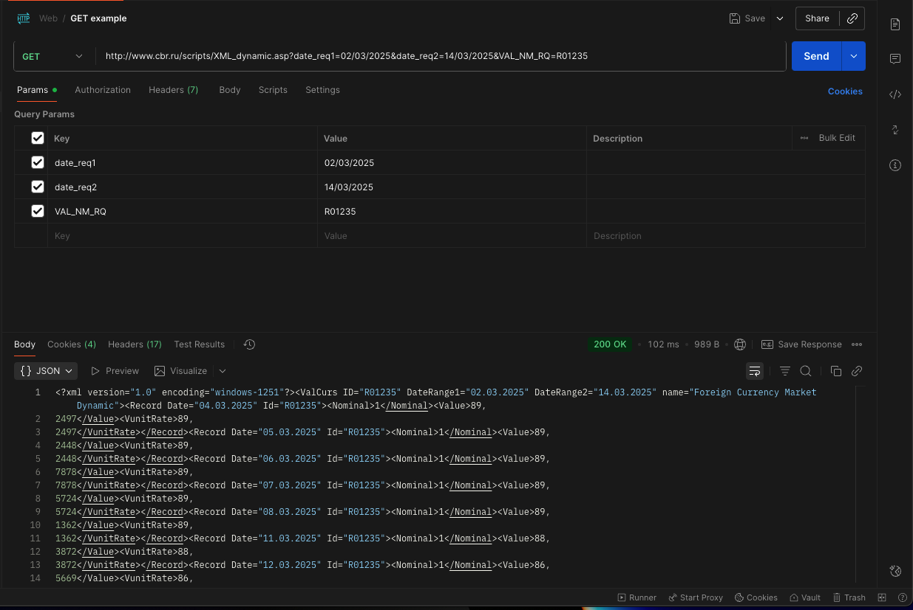

printf 'GET /get HTTP/1.1 Host: httpbin.org Connection: close' | nc httpbin.org 80

printf 'POST /post HTTP/1.1 Host: httpbin.org Content-Type: application/json Content-Length: 41 Connection: close {"book":"Чапаев и Пустота","price":100}' | nc httpbin.org 80

curl -v http://httpbin.org/get

curl -X POST http://httpbin.org/post \ -H "Content-Type: application/json" \ -d '{"book":"Чапаев и Пустота","price":100}'

http://www.cbr.ru/scripts/XML_dynamic.asp?date_req1=02/03/2025&date_req2=14/03/2025&VAL_NM_RQ=R01235
